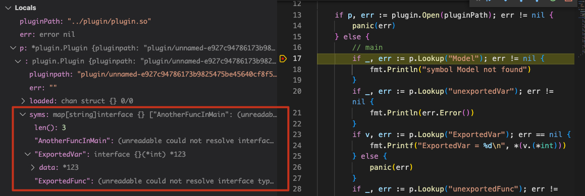

Go Plugin 学习
最近在做 MIT 6.824 Lab 1 的时候发现提供的代码中用到了 Go 的插件系统，所以就趁着这个机会简单学习了一下 Go plugin package。
静态链接库与动态链接库
写过 C/C++ 的应该对这个非常熟悉，不是编译时遇到 ld fail，就是运行时遇到 dyld fail，ld 和 dyld 就分别对应了静态链接和动态链接过程。那静态链接与动态链接有什么差异，各自又有什么优缺点呢？
首先不管是静态链接库还是动态链接库，它们都是由程序依赖的外部函数、变量（统称 symbol）组成。静态链接时，链接器（ld）将程序和静态库打包到一个可执行文件，同时将 symbol 解析成对应的地址（address），这个可执行文件可以单独运行；相反地，动态链接就是不把动态库和程序打包成一个可执行文件，将 symbol 的解析延迟到运行时，再由 dyld 完成 symbol 到 address 的解析，不过需要提供动态库才可以运行程序。
对应的优缺点也非常明显了，首先静态链接会把静态库和程序打包成一个可执行文件，产物体积相对较大，且相同的静态库代码不同进程之间无法共享，内存占用较高；好处是可执行文件可以单独运行，部署方便。动态链接的 symbol 解析过程在运行时发生，所以可以实现一些热插拔功能，同时多个进程之间共享可以同一动态库，降低了内存占用；但是维护麻烦，symbol 解析失败排查也会麻烦一点。
在如今的硬件条件下，静态链接的易于部署比动态链接的低内存占用更加重要，采用动态链接更多还是看重其灵活性。
Go plugin package
Go 插件相关能力由 plugin 包提供，同时这个包实际上是对 dyld 调用的封装，使其更符合 go 的风格，相关的函数有：
# dlfcn.h
dlopen - load and link a dynamic library or bundle
dlsym - get address of a symbol
dlerror - get diagnostic information
dlclose - close a dynamic library or bundle
看下 plugin 的文档：
A plugin is a Go main package with exported functions and variables that has been built with:
go build -buildmode=pluginWhen a plugin is first opened, the init functions of all packages not already part of the program are called. The main function is not run. A plugin is only initialized once, and cannot be closed.
简单来说就是，plugin 项目和一般的 Go 项目类似，必须定义一个 main package，同时 main pacakge 中可导出的 Function 和 Variable 可以被动态链接器查找到，注意是只有 main package 中的才可以，后面我们通过实例验证一下。init 函数调用规则就和普通项目一样了。
plugin 包中只提供了 Open(path stirng)(*Plugin,error) 和 Lookup(symName string)(Symbol,error) 两个方法，很好理解，加载并解析动态链接库和查找 symbol。先看下 Plugin 结构体的定义：
type Plugin struct {
pluginpath string
err string // set if plugin failed to load
loaded chan struct{} // closed when loaded
syms map[string]interface{}
}
// A Symbol is a pointer to a variable or function.
type Symbol interface{}
这里关注 syms 就可以了，它保存了这个动态链接库对外提供的 symbol，Lookup 函数实际上就是执行 map get 操作。拿到 Symbol 后执行强制类型转换就可以正常使用了。
实例
这里我们建立两个工程，ptest 和 plugin：
# ptest
├── main.go
└── go.mod
# plugin
├── add.go
├── add2.go
├── subpkg
│ └── sub.go
└── go.mod
重点关注一下 plugin 工程，我们在不同的 package 里定义可导出和不可导出的函数或变量，然后在主工程中断点看是不是与前面的学习一致。
// main - add.go
func init() {
fmt.Println("add init called")
}
var ExportedVar = 123
var unexportedVar = 456
func ExportedFunc(a int, b int) int {
return subpkg.NonMainPkgFunc(a, b)
}
func unexportedFunc() {
}
type Model struct {
ID string
}
// main - add2.go
func init() {
fmt.Println("add2 init called")
}
func AnotherFuncInMain(a, b int) int {
return a + b
}
// subpkg
func init() {
fmt.Println("sub pkg init called")
}
func NonMainPkgFunc(a int, b int) int {
return a + b
}
我们在 add.go 中分别定义了可导出/不可导出的变量和函数以及一个可导出的类，在 add2.go 中定义了一个可导出函数；在 subpkg 中定义了一个可导出函数。按照文档描述，我们在主工程中可以 Lookup 到 ExportedVar、ExportedFunc、AnotherFuncInMain，其它的都将不可见，也即不存在于 Plugin.syms 中。
下面是 main.go 的实现：
func main() {
pluginPath := os.Args[1]
if p, err := plugin.Open(pluginPath); err != nil {
panic(err)
} else {
// main
if _, err := p.Lookup("Model"); err != nil {
fmt.Println("symbol Model not found")
}
if _, err := p.Lookup("unexportedVar"); err != nil {
fmt.Println(err.Error())
}
if v, err := p.Lookup("ExportedVar"); err == nil {
fmt.Printf("ExportedVar = %d\n", *(v.(*int)))
} else {
panic(err)
}
if _, err := p.Lookup("unexportedFunc"); err != nil {
fmt.Println(err.Error())
}
if sym, err := p.Lookup("ExportedFunc"); err == nil {
res := sym.(func(int, int) int)(1, 2)
fmt.Printf("ExportedFunc returns %d\n", res)
} else {
panic(err)
}
if sym, err := p.Lookup("AnotherFuncInMain"); err == nil {
res := sym.(func(int, int) int)(3, 4)
fmt.Printf("AnotherFuncInMain returns %d\n", res)
} else {
panic(err)
}
// subpkg
if _, err := p.Lookup("NonMainPkgFunc"); err != nil {
fmt.Println(err.Error())
}
}
}
然后开始测试我们的代码：
cd plugin
go build -buildmode=plugin -o plugin.so add.go add2.go
cd ptest
go run main.go ../plugin/plugin.so
得到的输出如下：
sub pkg init called
add init called
add2 init called
symbol Model not found
plugin: symbol unexportedVar not found in plugin plugin/unnamed-e927c94786173b9825475be45640cf8f5788c833
ExportedVar = 123
plugin: symbol unexportedFunc not found in plugin plugin/unnamed-e927c94786173b9825475be45640cf8f5788c833
ExportedFunc returns 3
AnotherFuncInMain returns 7
plugin: symbol NonMainPkgFunc not found in plugin plugin/unnamed-e927c94786173b9825475be45640cf8f5788c833
和我们猜想的一致，再进一步，这些查找失败的会不会是因为它们有特殊的名称呢？我们结合断点探个究竟。

可以看到确实只有那些被导出函数和变量，Type 和未导出函数、变量都无法被 Lookup 查找到。
那
init函数又是怎么回事呢？ VSCode 在调试时会自动添加一个-gcflags="all=-N -l"的编译选项，所以我们在断点前也需要加上这个编译选项重新构建插件，否则你可能会看到一个 “plugin was built with a different version of package xxx” 的报错。
总结
Go 插件系统还是非常好上手，除了不支持 Windows 外，唯一的缺憾就是无法卸载了。最后推荐一个好玩的项目 https://github.com/hashicorp/go-plugin。